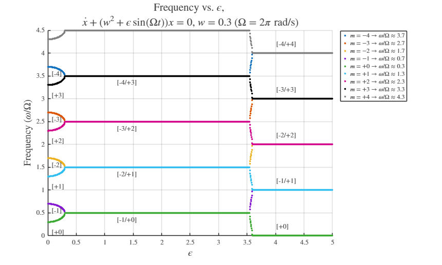

% function Frequency_Peters % Floquet Frequency Plot for Mathieu's Equation (Figure 2 Appearance) % Separates branches according to the integer multiple 'm' used. % % Based on: % David A. Peters, Sydnie M. Lieb, Loren A. Ahaus % "Interpretation of Floquet Eigenvalues and Eigenvectors for Periodic Systems" % JOURNAL OF THE AMERICAN HELICOPTER SOCIETY 56, 032001 (2011) clear; clc; close all; % --- Setup for Figure Saving --- fDir = 'figureFolder'; % Folder for figures if ~isdir(fDir) %#ok<ISDIR> mkdir(fDir) end fDirPeters = fullfile(fDir,'figureFolderPeters'); % Subfolder specific to Peters' plots if ~isdir(fDirPeters) %#ok<ISDIR> mkdir(fDirPeters) end % Plotting style selection K = 'ColoredLines'; % K = 'BlackLines'; useK = strcmp(K,'BlackLines'); % ----------------------------------------------------------------------- % --- Parameters and Initialization --- % ----------------------------------------------------------------------- Omega = 1; % Fundamental frequency (Omega = 1 rad/s) T = 2*pi/Omega; % Period % Outer loop for different unperturbed frequencies (w) w_values = [0.3, 0.5, 0.7]; for w = w_values w_sq = w^2; % --- Basis Frequency omega0 Calculation (Peters' Convention) --- % The basis frequency, omega0, must satisfy 0 <= omega0 <= Omega/2. basis_freq = mod(w, Omega); if basis_freq > Omega/2 basis_freq = Omega - basis_freq; end omega0 = basis_freq; % Filename generation for saving the plot pngname = strrep(sprintf('PetersFrequency%s_w%1.1f',K,w),'.','dot'); pngfile = fullfile(fDirPeters,[pngname,'.png']); % Determine the range of epsilon (x-axis limit) if abs(w - 0.3) < 0.001 eps_end = 5; eps_no = 1000; % High resolution for w=0.3 elseif abs(w - 0.7) < 0.001 eps_end = 3.5; % Axis limit for w=0.7 plot eps_no = 150; else % Case for w=0.5 and others eps_end = 3.5; eps_no = 150; end eps_vals = linspace(0, eps_end, eps_no); m_range = (-4:4); % Integer multiple range for plotting branches (m*Omega) % Structure to hold results, organized by branch 'm' (e.g., m_0, m_neg_1) results_by_branch = struct(); for m = m_range % Create a valid field name (MATLAB field names cannot start with a sign) if m < 0 field_name = ['m_neg_', num2str(abs(m))]; else field_name = ['m_', num2str(m)]; end results_by_branch.(field_name) = []; % Initialize with empty array end % ----------------------------------------------------------------------- % --- Floquet Exponent Calculation and Branch Separation --- % ----------------------------------------------------------------------- x0 = eye(2); % Initial state matrix for Phi(0) = I for k = 1:length(eps_vals) epsilon = eps_vals(k); % The state matrix D(t) for the ODE (Eq. 1): % dot(x) + (w^2 + epsilon*sin(Omega*t)) * x = 0 % State-space form (Eq. 2): d{x}/dt = [D(t)]{x} D_func = @(t) [0, 1; -(w_sq + epsilon*sin(t)), 0]; % Solve for the Transition Matrix Phi(t): {x(t)}=[Phi(t)]{x(0)} (Eq. 7) [~, Phi_t] = ode45(@(t, x) reshape(D_func(t) * reshape(x, 2, 2), 4, 1), [0, T], reshape(x0, 4, 1)); Phi_T = reshape(Phi_t(end, :), 2, 2); % Monodromy Matrix at Phi(T) % Calculate Floquet Exponents: eta = log(Lambda) / T, see Eq. 8 % [Phi(t)]=[A(t)][−exp(eta_j t)−][A(0)]^−1 % [A(0)]^−1[Phi(T)][A(0)]=[−Lambda_j−]=[−exp(eta_j T)−] Lambda = eig(Phi_T); % Characteristic Exponent (Eq. 9) eta = log(Lambda) / T; % The **real part** of eta (Re(eta)) determines stability. % If Re(eta) > 0, the system is unstable (exponential growth). % The **imaginary part** of eta (Im(eta)) determines the frequency (mu). % Extract the Imaginary Part (normalized frequency, mu*Omega = Im(eta)) % omega/Omega = Im(eta)/Omega (where Omega=1, so omega = Im(eta)) normalized_omega = imag(eta) / Omega; % --- Separate and Store Branches (m) --- % 1. Find the basis frequency (principal value) % This step effectively extracts the fractional part of the frequency, % which corresponds to the base frequency component (omega0/Omega) (Eq. 10). basis_freq_r =normalized_omega(1); % 2. Map this base frequency to all possible branches 'm' % The physical frequency omega is defined by omega/Omega = m + mu. % Here, 'm' represents the **integer multiple** of the excitation frequency Omega. % - **Positive m (m>0):** Frequencies omega approx m*Omega + omega_0. These branches generally increase with m. % - **Negative m (m<0):** Frequencies omega approx |m|*Omega - omega_0. These branches approach |m|*Omega from below (or above, depending on convention). for m = m_range if m==0 branch_freq = basis_freq_r; else % This formula reconstructs the full frequency based on the integer m and basis frequency. % For m > 0, it gives branch_freq = m*Omega + basis_freq_r. % For m < 0, it gives branch_freq = |m|*Omega - basis_freq_r. branch_freq = abs(m) *Omega + sign(m) *basis_freq_r; end % Determine the valid field name if m < 0 field_name = ['m_neg_', num2str(abs(m))]; else field_name = ['m_', num2str(m)]; end % Store [epsilon, frequency] for this specific branch results_by_branch.(field_name) = [results_by_branch.(field_name); epsilon, branch_freq]; end end % ----------------------------------------------------------------------- % --- Plotting --- % ----------------------------------------------------------------------- figure; hold on; color_map = lines; color_map = [color_map(1:7,:);0*ones(1,3);0.5*ones(1,3)]; % Title Update: Includes ODE, w, and Omega definition ode_str = '$\dot{x} + (w^2 + \epsilon\sin(\Omega t)) x = 0$'; w_str = num2str(w, '%1.1f'); new_title = {'Frequency vs. $\epsilon$, ', [ode_str, ', $w = ', w_str, '$ ($\Omega = 2\pi$ rad/s)']}; title(new_title, 'FontSize', 16, 'Interpreter', 'latex'); xlabel('$\epsilon$', 'FontSize', 14, 'Interpreter', 'latex'); ylabel('Frequency ($\omega/\Omega$)', 'FontSize', 14, 'Interpreter', 'latex'); idx = 1; for m = m_range % Determine field name if m < 0 field_name = ['m_neg_', num2str(abs(m))]; else field_name = ['m_', num2str(m)]; end % --- Legend Calculation: Peters' Frequency Convention (FIXED \omega) --- if m >= 0 % omega/Omega approx omega0/Omega + m freq_normalized = omega0/Omega + m; % Use \\omega to represent \omega to the LaTeX interpreter freq_str = sprintf('$m=%+d \\rightarrow \\omega/\\Omega \\approx %.1f$', m, freq_normalized); elseif m < 0 % omega/Omega approx |m| - omega0/Omega m_abs = abs(m); freq_normalized = m_abs - omega0/Omega; % Use \\omega to represent \omega to the LaTeX interpreter freq_str = sprintf('$m=%+d \\rightarrow \\omega/\\Omega \\approx %.1f$', m, freq_normalized); end % Get data for plotting data = results_by_branch.(field_name); % The initial color based on sequential index 'idx' current_color = color_map(idx, :); % Plotting using dots/scatters to form the continuous curves if useK == 1 plot(data(:, 1), data(:, 2), '.', 'Color','k', 'MarkerSize', 8, 'DisplayName', freq_str); else % Pass the calculated 'current_color' to the plot function. % This ensures both the line and the legend swatch use the swapped color. plot(data(:, 1), data(:, 2), '.', 'Color', current_color, 'MarkerSize', 8, 'DisplayName', freq_str); end idx = idx + 1; end % Set Axis limits grid on; set(gca, 'TickLabelInterpreter', 'latex'); % Add Legend if colors are used if ~useK legend('Location', 'northeastoutside', 'Interpreter', 'latex'); end % ----------------------------------------------------------------------- % --- Branch Label Annotations --- % ----------------------------------------------------------------------- % These labels mark the primary frequency branches at different regions % of the stability chart. hold on; % Left-side labels (ε -> 0) text(0.05, 0.08, '[+0]', 'FontSize', 10, 'Interpreter', 'latex'); % Near w/Omega = 0.7 - 0.5 = 0.2 (using basis freq) text(0.05, 0.55, '[-1]', 'FontSize', 10, 'Interpreter', 'latex'); % Near 1 - 0.3 = 0.7 text(0.05, 1.08, '[+1]', 'FontSize', 10, 'Interpreter', 'latex'); % Near 1 + 0.3 = 1.3 text(0.05, 1.55, '[-2]', 'FontSize', 10, 'Interpreter', 'latex'); % Near 2 - 0.3 = 1.7 text(0.05, 2.08, '[+2]', 'FontSize', 10, 'Interpreter', 'latex'); % Near 2 + 0.3 = 2.3 text(0.05, 2.55, '[-3]', 'FontSize', 10, 'Interpreter', 'latex'); % Near 3 - 0.3 = 2.7 text(0.05, 3.08, '[+3]', 'FontSize', 10, 'Interpreter', 'latex'); % Near 3 + 0.3 = 3.3 text(0.05, 3.55, '[-4]', 'FontSize', 10, 'Interpreter', 'latex'); % Near 4 - 0.3 = 3.7 % Middle labels (Near the primary instability boundaries) text(1.2, 0.35, '[-1/+0]', 'FontSize', 10, 'Interpreter', 'latex'); text(1.2, 1.35, '[-2/+1]', 'FontSize', 10, 'Interpreter', 'latex'); text(1.2, 2.35, '[-3/+2]', 'FontSize', 10, 'Interpreter', 'latex'); text(1.2, 3.35, '[-4/+3]', 'FontSize', 10, 'Interpreter', 'latex'); % --- RIGHT-SIDE LABELS (Secondary Instability Boundaries) --- % The labels are positioned based on the value of 'w' used in the analysis. if abs(w - 0.3) < 0.001 % Labels for w = 0.3 text(4.0, 0.20, '[+0]', 'FontSize', 10, 'Interpreter', 'latex'); text(4.0, 1.20, '[-1/+1]', 'FontSize', 10, 'Interpreter', 'latex'); text(4.0, 2.20, '[-2/+2]', 'FontSize', 10, 'Interpreter', 'latex'); text(4.0, 3.20, '[-3/+3]', 'FontSize', 10, 'Interpreter', 'latex'); text(4.0, 4.20, '[-4/+4]', 'FontSize', 10, 'Interpreter', 'latex'); elseif abs(w - 0.7) < 0.001 % Labels for w = 0.7 text(3.0, 0.20, '[+0]', 'FontSize', 10, 'Interpreter', 'latex'); text(3.0, 1.20, '[-1/+1]', 'FontSize', 10, 'Interpreter', 'latex'); text(3.0, 2.20, '[-2/+2]', 'FontSize', 10, 'Interpreter', 'latex'); text(3.0, 3.20, '[-3/+3]', 'FontSize', 10, 'Interpreter', 'latex'); text(3.0, 4.20, '[-4/+4]', 'FontSize', 10, 'Interpreter', 'latex'); end % Print to Png file print(pngfile, '-dpng') end